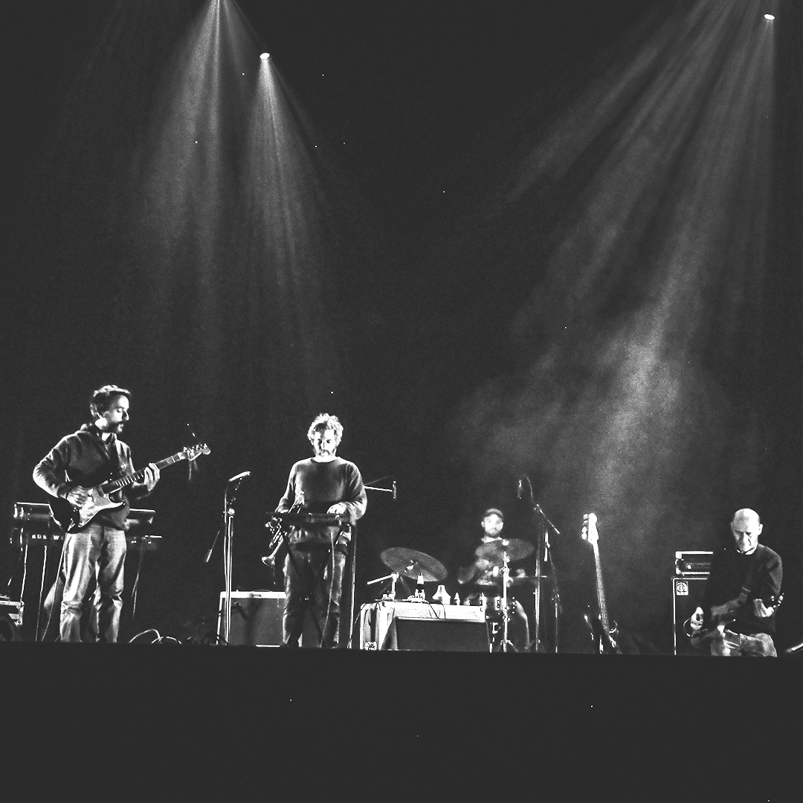

The Ivonne Van Cleef Orquesta
Proyecto transfronterizo que cruza folk espectral, ambientes western y texturas analógicas. TIVCO trabaja con instrumentación orgánica, cintas y capas de ruido amable para construir paisajes de ruta y río.
The Ivonne Van Cleef Orquesta
A borderless project blending spectral folk, western atmospheres and analog textures. TIVCO builds road‑and‑river soundscapes with organic instruments, tape and gentle noise layers.

Reemplazar img/tivco.jpg
Sobre el álbum — Reel Ghosts & River Echoes
Grabado entre costas e islas del litoral. Guitarras, percusiones mínimas y grabaciones de campo se entrelazan en un relato de fantasmas de cinta y ecos de agua.
About the album — Reel Ghosts & River Echoes
Recorded across riverbanks and islands. Guitars, sparse percussion and field recordings weave a tale of tape ghosts and water echoes.
Jit Jot Records
Sello y productora independiente de Rosario, Argentina. Ediciones artesanales en formatos físicos y curaduría de eventos que celebran la diversidad musical y el espíritu DIY.
Jit Jot Records
Independent label and production house from Rosario, Argentina. Handmade physical editions and events celebrating musical diversity and the DIY spirit.
Objetivo
Buscamos apoyo para edición internacional (vinilo/cassette/digital), distribución y prensa. Interesados escribir a contacto@jitjotrecords.com.
Goal
We are seeking international release support (vinyl/cassette/digital), distribution and press. Inquiries: contacto@jitjotrecords.com.